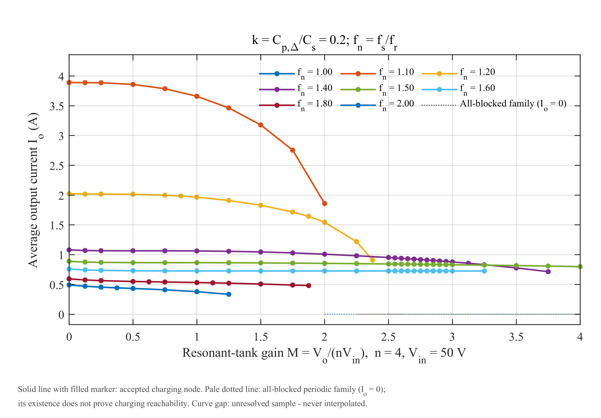
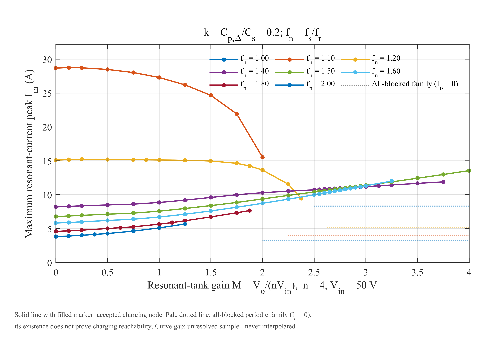
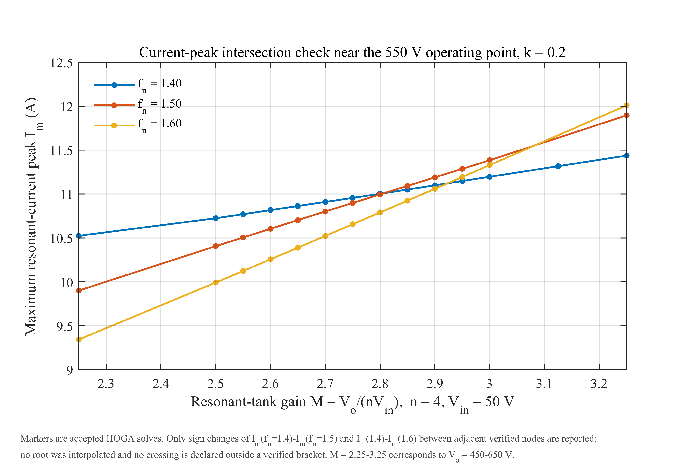
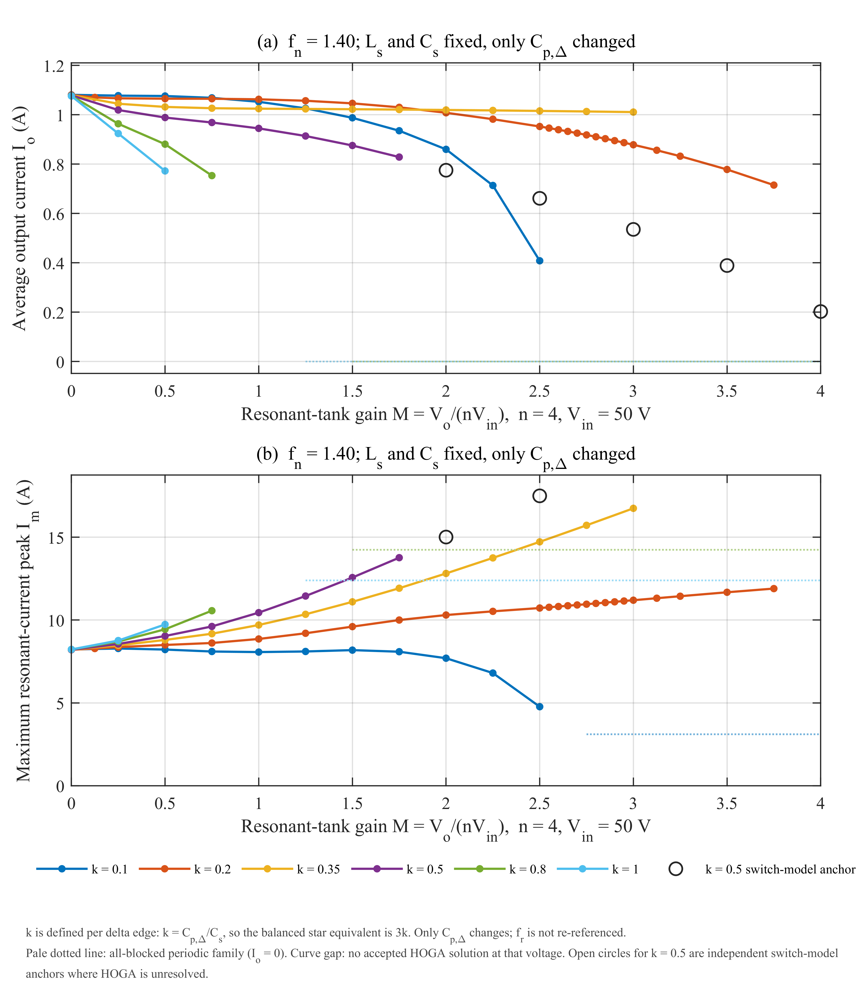
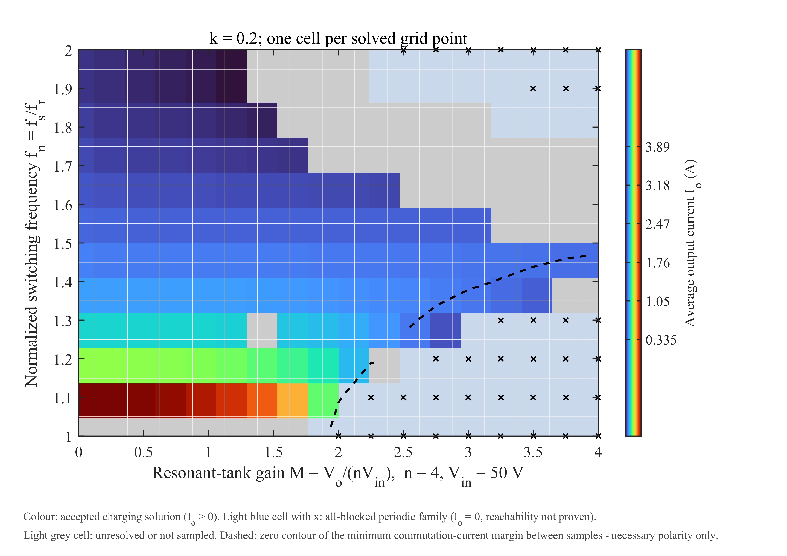
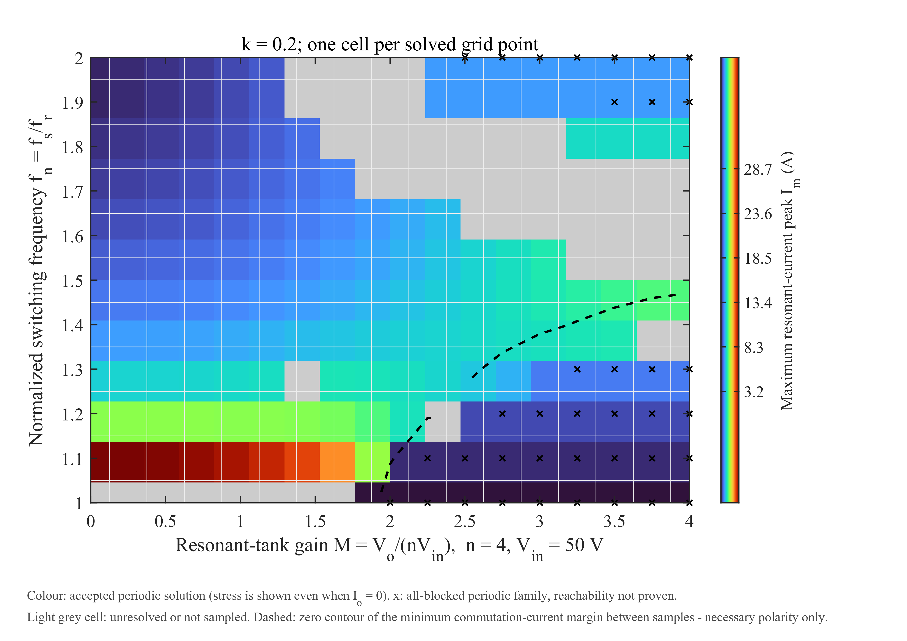

05 归一化特性扫描：344 个工况点的 HOGA 地图
数据：data/normalized/characteristic_domain.csv；完整报告：reports/normalized/02_扫描与求解状态.md、05_结果与讨论.md。这一组结果回答的是：把开关频率和并联电容比做成无量纲变量后，三相 LCC 在 50–800 V 内的输出能力、电流应力和可行域是什么样。
5.1 归一化定义
| 量 | 定义 | 值 / 范围 |
|---|---|---|
| 谐振频率 | fr = 1/(2π√(LsCs)) |
199.804064 kHz |
| 阻抗基值 | Z0 = √(Ls/Cs) |
5.900408 Ω |
| 归一化频率 | fn = fs/fr |
1.0–2.0（约 199.8–399.6 kHz） |
| 电容比 | k = Cp_delta/Cs |
0.1 / 0.2 / 0.35 / 0.5 / 0.8 / 1.0 |
| 谐振腔增益 | M = Vo/(nVin) |
0–4；M=4 对应 800 V |
| 输出电流归一 | Jo = Io/(Vin/Z0) |
无量纲 |
| 应力归一 | Jm = Im/(Vin/Z0) |
无量纲 |
k 改变的是 Δ 每条边的 Cp_delta：
k |
0.1 | 0.2 | 0.35 | 0.5 | 0.8 | 1.0 |
|---|---|---|---|---|---|---|
Cp_delta/nF |
13.5 | 27 | 47.25 | 67.5 | 108 | 135 |
注意：
k_star = 3k只用于平衡星等效推导；主数据始终使用实际 Δ 参数。- 改变
k不重新定义fr，只改变每条边的Cp_delta。 - 曲线不是“无损、任意器件”的通用图：
Rin/Z0 ≈ 1.6948e-4、Vf/Vin = 0.012与具体参考电路绑定。
5.2 扫描设计与实际状态
| 阶段 | 计划点 | 现存原始 MAT | 通过 | 其中充电 | 其中全阻断族 | 未决 |
|---|---|---|---|---|---|---|
A：Vo=0:50:800 × fn=1:0.1:2，另 fn=1.4 六个 k |
272 | 259 | 176 | 115 | 61 | 96（首次运行状态） |
| B：自适应 168 点 | 168 | 168 | 87 | 75 | 12 | 81 |
| C：恢复扫描（B 后 81 个未决点） | 81 | 81 | 13 | 13 | 0 | 68 |
| 并集（唯一点） | 440 | 508 条记录 / 344 唯一点 | 276 | 203 | 73 | 68 |
最终状态（以 characteristic_domain.csv 为准）：
- 344 个唯一点；
- 276 个通过 = 203 个充电 CCM + 73 个全阻断周期族；
- 68 个未决；
- 通过点中 H31 共 257 点、H63 共 19 点；
- 203 个充电点全部为 CCM（
blocked_fraction < 1e-8），本轮没有 DCM 充电点。
口径提醒：reports/normalized/05_结果与讨论.md与06_交付清单.md里仍保留阶段 C 之前的“263 通过 / 190 充电 / 81 未决”口径；02_扫描与求解状态.md第 5A 节记录了阶段 C 恢复 13 点后的最新口径（276 / 203 / 68）。本仓库以 02 的表格与characteristic_domain.csv为准，并在docs/07中列为已知文档不一致。
5.3 输出能力：Io 随 Vo 单调下降，电压上限由 fn 决定
在 k=0.2 的采样集合中，每个 fn 能到达的最高充电电压：
fn |
1.1 | 1.2 | 1.275 | 1.3 | 1.375 | 1.4 | 1.5 | 1.6 | 1.7 | 1.8 | 1.9 | 2.0 |
|---|---|---|---|---|---|---|---|---|---|---|---|---|
最高 Vo/V |
400 | 475 | 550 | 600 | 700 | 750 | 800 | 650 | 500 | 375 | 300 | 250 |
- 并非“频率越高越能升压”：
fn从 1.5 继续升高，电压覆盖反而收缩。 - 只有
fn=1.5覆盖到 800 V；fn=1.4到 750 V，fn=1.3到 600 V，fn=1.1只到 400 V。 - 因此定频充电在 50–800 V 全程不可行；可行轨迹必须随
Vo抬升逐步提高fn，并停留在可行域内部。 fn=1.0整列没有可验收充电解：17 点中 9 个全阻断族、8 个未决。这是串联谐振点附近条件数极差的数值奇异，不能写成“物理上不能充电”。

5.4 电流应力：低压大环流、550–600 V 交叉
- 全数据集最大
Im：28.755 A，出现在Vo=25 V、fn=1.10、k=0.2；对应Io=3.888 A、Irms=20.064 A。 - 低电压、低频率时，谐振腔电流主要是
Ls–Cs–Cp的无功环流，Im很大。 - 500–600 V 附近，各频率的
Im曲线高度汇聚，随后次序反转：750 V 处Im(fn=1.4)=11.90 A < Im(fn=1.5)=12.99 A。 - 交叉不是插值求出来的，而是由三个已验收区间夹住：
| 比较 | 变号区间 | 左端差/A | 右端差/A |
|---|---|---|---|
Im(fn1.4) − Im(fn1.5) |
560 → 570 V | +0.0074 | −0.0418 |
Im(fn1.4) − Im(fn1.6) |
580 → 590 V | +0.0402 | −0.0462 |
Im(fn1.5) − Im(fn1.6) |
600 → 650 V | +0.0556 | −0.1138 |
报告只给变号区间，没有给出“563.7 V”这类精确交叉点；不要伪造插值根。
工程含义：
- 器件选型不能只看额定工作点；全阻断族的应力可能高于可充电点（例如
fn=1.5、600–800 V 空载全阻断Im≈14.5 A，高于同电压可充电点的 11.4–13.6 A）。 - 变频率充电跨越 550–600 V 时要平滑过渡，否则会出现应力次序切换。


5.5 电容比 k：用电流换刚度
固定 fn=1.4，只改变 k：
k |
0.1 | 0.2 | 0.35 | 0.5 | 0.8 | 1.0 |
|---|---|---|---|---|---|---|
400 V 最大 Io/A |
0.860 | 1.859 | 1.020 | 无 HOGA 解* | 无 HOGA 解 | 无 HOGA 解 |
800 V 最大 Io/A |
— | 0.800 | — | 0.203（开关锚点） | — | — |
fn=1.4 求解域上限/V |
500 | 750 | 600 | 350（HOGA） | 150 | 100 |
* k=0.5 在 400–800 V 有独立开关模型锚点，Io 0.775→0.203 A、Im 15.0→24.8 A，周期变化约 0.002%；这不是 HOGA 解，但证明“物理上存在导通周期解”。所以 k=0.5 的 350 V 是求解器/模式发现边界，不是物理边界。
k 的机理：
Cp_delta折算到平衡星为3k·Cs；- 空载谐振点
f_open/fr = √(1 + 1/(3k))，随k由 2.08 降到 1.15； - 固定
fn=1.4时，k=0.1远低于空载谐振，k=0.5已高于它； - 越过空载谐振点不会关闭电压能力，而是把谐振腔变“硬”：同一电压下可用电流减小、环流增大。
因此：
- 要覆盖 800 V，六个采样值里
k≈0.2的末端电流最大（0.800 A）； - 只需覆盖 400 V，
k≈0.35更优（1.020 A）； k≥0.8会把可用区间压到 200 V 以下，不适合 50–800 V 目标；- 跨
k比较时用fn/f_open比fn更合理，但不能把某个fn/f_open区间当作“可达 800 V”的充分判据。

5.6 二维工作域
M–fn 平面上的可充电区域呈楔形：
- 上边界随
Vo升高向低fn收缩； fn≥1.70时，400 V 以上基本消失；- 零换流裕度等值线从约
(420 V, fn=1.0)弯向(800 V, fn=1.5)； - 虚线右下方“能充电但换流电流非全正”，虚线上方“换流有利但充不上去”。
两条边界的物理性质不同：
- 换流电流方向是开关过程的必要条件，不是 ZVS 认证；
- 能量/增益约束才是“能不能传能”的边界。


5.7 调频能降应力，但不能改善“单位输出的应力代价”
在每个固定电压断面，提高 fn 确实同时降低 Io 与 Im，但两者不成比例：
- 100 V：
fn由 1.10 升到 2.00，Io降 89%，Im只降 85%；Im/Io反而由 7.4 升到 9.9 A/A； - 400 V：
Im/Io由 8.4 升到 13.8。
所以：
- 调频可以减小绝对应力；
- 但不能改善单位输出的应力代价；
- 要改善后者，只能改
k、n、Ls/Cs这类参数级手段。
在 100 V，若只要求最大采样电流的 25%，可把 Irms 从 20.18 A 降到 5.96 A（−70.5%），代价是 Io 降到约 1/4、充电时间约 4 倍；400 V 同口径可降 46.3%；600 V 只有 15.9%，而且 fn=1.30 点不满足六次换流电流全正；800 V 只有一个可充电采样点（fn=1.50），频率自由度为零。
5.8 开关模型交叉验证
18 次独立开关模型记录，17 次通过（1 次失败为 700 V/fn1.10 全阻断族，末周期与前周期仍差 1.684%，未进入周期稳态；用零均值开路门极映射初值重做后通过）。
通过点的最大值：
| 指标 | 最大相对误差 | 出现工况 |
|---|---|---|
Io |
0.0620% | 350 V/fn1.4/k0.5 |
Im |
0.623% | 400 V/fn1.4/k1.0 |
Irms |
0.0159% | 400 V/fn1.4/k1.0 |
| 波形 L2 | 0.232% | 400 V/fn1.4/k1.0 |
Vo 漂移 |
0.00449% | 100 V/fn1.1/k0.2 |
注意：
- 全阻断族的
Io相对误差是NaN（分母为 0），要用绝对误差； k=0.35与k=0.8没有开关验证点；- 400 V/k0.5 因无 HOGA 参考解，没有做同点 HOGA–Simulink 对比；其开关锚点只证明“存在导通周期解”。
5.9 结论与边界
在本模型、本参数、本扫描内：
Io随Vo单调下降，电压上限由fn决定；只有中间频率区间能覆盖到 800 V。Im在低压低频最大；550–600 V 附近出现频率次序反转。k增大使高压段电流迅速下降、环流上升；k≈0.2适合 800 V，k≈0.35适合 400 V。- 调频降低绝对应力，但不改善单位输出的应力代价。
- 68 个未决点不能写成“物理无解”；至少
k=0.5的 9 个点已被开关模型证明存在导通解。 - 全阻断族不是“实际充电可达”；它只说明“整流桥不导通、
Io=0的周期解存在”。 - 没有 ZVS 认证、损耗/温升、闭环充电动态或硬件实验。
5.10 来源
reports/normalized/02_扫描与求解状态.mdreports/normalized/05_结果与讨论.mddata/normalized/characteristic_domain.csvdata/normalized/switching_validation_all.csvdata/normalized/switch_model_anchors.csvdata/normalized/crossing_brackets.csv